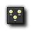

Main Actions - Set 1
This section deals with some of the main actions
you will use when working with GameMaker: Studio.
The main action sets are full of the most important actions that
you will need when working with GameMaker: Studio, and the
first set, marked "main1" in the object properties tab, deals with
instances, sprites, sounds and moving from room to room.
Instances
 Create Instance
Create Instance
With this action you can create an instance of an object. You
specify which object to create and the position for the new
instance. If you check the Relative box, the position is
relative to the position of the current instance. Creating
instances during the game is extremely useful. A space ship can
create bullets; a bomb can create an explosion, etc. In many games
you will have some controller object that from time to time creates
monsters or other objects. For the newly created instance the
creation event is executed.
Create
Moving
This action works the same as the action above but with two
additional fields. You can now also specify the speed and direction
of the newly created instance. Note that if you check the
Relative box, only the position is relative, not the speed
and direction. For example, to make a bullet move in the direction
of the person shooting you have to use a little trick. As position
use 0,0 and check Relative. As direction we need the current
direction of the instance. This can be obtained by typing in the
word direction. (This actually is a variable that always
indicates the current direction in which the instance is
moving.)
Create
Random
This action lets you create an instance of one out of four objects.
You specify the four objects and the position. An instance of one
of these four objects is created at the given position. If you
check the Relative box, the position is relative to the
position of the current instance. If you need a choice out of less
than four objects you can use No Object for some of them. This is
for example useful to generate a random enemy at a location.
Change
Instance
With this action you can change the current instance into an
instance of another object. So for example, you can change an
instance of a bomb into an explosion. All settings, such as the
motion and the value of variables, will stay the same. You can
indicate whether or not to perform the destroy event for the
current object and the creation event for the new object.
 Destroy
Instance
Destroy
Instance
With this action you destroy the current instance. The destroy
event for the instance is executed.
 Destroy at
Position
Destroy at
Position
With this action you destroy all instances whose bounding box
contains a given position. This is useful, for example, when you
use an exploding bomb. When you check the Relative box the
position is taken relative to the position of the current
instance.
Sprites
Change
Sprite
Use this action to change the sprite for the instance. You indicate
which new sprite. You can also indicate with subimage must be
shown. Normally you would use 0 for this (the first subimage)
unless you want to see a particular subimage. Use -1 if you do not
want to change the current subimage shown. Finally you change the
speed of the animation of the subimages. If you only want to see a
particular subimage, set the speed to 0. If the speed is larger
than one subimages will be skipped. If it is smaller than 1
subimages will be shown multiple times. Don't use a negative speed.
Changing sprites is an important feature. For example, often you
want to change the sprite of a character depending on the direction
in which it walks. This can be achieved by making different sprites
for each of the (four) directions. Within the keyboard events for
the arrow keys you set the direction of motion and the sprite.
Transform Sprite
Use this action to change the size and orientation of the sprite
for the instance. Use the scale factors to make it larger or
smaller. The angle gives the counter-clockwise orientation of the
sprite. For example, to make the sprite oriented in the direction
of motion use as a value direction. For example, this is
useful for a car. You can also indicate whether the sprite should
be mirrored horizontally and/or flipped vertically.
 colour Sprite
colour Sprite
Normally the sprite is drawn as it is defined. Using this action
you can change the colour of the sprite. This colour is blended
with the sprite, that is, it is combined with the colours of the
sprite. If you want to draw a sprite in different colours you
better define the sprite in black and white and use the blend
colour to set the actual colour. You can also indicate an alpha
transparency. With a value of 1 the sprite is opaque. With a value
of 0 it is completely transparent. With a value in between you will
partially see the background shine through it. This is great for
making explosions.
Sounds
Play
Sound
With this action you play one of the sound resources you added to
your game. You can select the sound you want to play and choose
whether it should play only once (the default) or loop
continuously. Multiple sounds can play at once.
Stop
Sound
This action stops the indicated sound. If multiple instances of
this sound are playing all are stopped.
Check
Sound
If the indicated sound is playing the next action is performed.
Otherwise it is skipped. You can select Not to indicate that
the next action should be performed if the indicated sound is not
playing. For example, you can check whether some background music
is playing and, if not, start some new background music. Note that
this action returns true when the sound actually plays through the
speakers. After you call the action to play a sound it does not
immediately reach the speakers so the action might still return
false for a while. Similar, when the sound is stopped you still
hear it for a while (e.g. because of echo) and the action will
still return true.
Rooms
Previous Room
Move to the previous room, as defined by the order of the room
assets in the resource tree. If you are in the first room of the
game and call this function you will get an error.
Next
Room
Move to the next room, as defined by the order of the room assets
in the resource tree. If you are in the last room of the game and
call this function you will get an error.
Restart
Room
This will restart the current room.
 Different
Room
Different
Room
With this action you can go to a particular room, selecting the
room to go to from the drop-down list.
Check
Previous
This action tests whether the previous room exists. If so, the next
action is executed.
Check
Next
This action tests whether the next room exists. If so, the next
action is executed.
© Copyright YoYo Games Ltd. 2018 All Rights Reserved